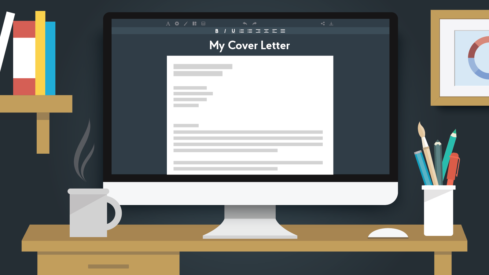

Cover Letters
It is believed that often employers don’t actually read cover letters. CVs are generally deemed much more significant, so you can assume that an employer has already read your CV if they are reading your cover letter. Don’t let this fool you into thinking, however, that you can simply neglect your cover letter. If a cover letter is optional, then you really ought to submit one! It shows that you are keen and that you care about the job, and you will be at an advantage over all the candidates who didn’t take the efforts to write a cover letter. And even if they won’t necessarily be reading it, it is important to make it impeccable for if they do read it, and some employers do actually place importance on them. As you will be applying to multiple places, writing cover letters for each one can seem a daunting task. Don’t worry - in this article it will be explained how to make each cover look impressive without spending too much time on each one.
Conciseness
Just like in writing a CV, you need to be as concise as possible, because employers spend even less time reading cover letters than they do on CVs! There can’t be any lengthy descriptions, repetitions or waffle in your cover letter. Note though that unlike in CVs, full sentences are necessary in cover letters as you are no longer writing in bullet points. And just as in CVs, it is important to be concise with regards to how much content there is in it. Less is more - the best cover letters are often the shortest ones, so don’t feel like you must fill majority of the page. The more things you add on your cover letter doesn’t improve it because it is judged based on quality, not quantity. By adding something less powerful than what is already on there, the ‘score’ of your cover letter out of 10 will not increase just because it is an extra thing, but will decrease because the average quality of all the activities listed has gone down by the new addition. Quality is not cumulative so make sure you only include the best parts of your experience.
Layout
A cover letter should have three main paragraphs, covering the following:
- Why you?
- Why this company?
- Motivation for this job/industry?
Why this company?
You need to convince the employer that this is not just a cover letter that is sent to lots of places with just a few words tweaked for each, and you do that by being as specific as possible in this paragraph. If you have any unique experience that shows motivation for the company that not everyone else can say, then this is the most important part so make sure to include this at the beginning of your cover letter. This can be something as simple as saying you attended one of the company’s recent campus presentations, or that you attended an online live-chat session where you got to speak to people working at the firm and hear their answers to questions, or that you networked with a person from the company at a certain event and learnt something about the company that really appealed to you. These things are the most important as they make you stand out from everyone else who has not taken the effort to go to company specific events, but as with anything else in a cover letter, it is essential to be as specific as possible. For example, if you networked with someone say the name of the person you spoke to, say which event it was that you met them at and when that event took place. Being specific makes whatever you say more convincing.
Given that you will be applying to lots of places, the unique information that you have is likely to be limited and as such there will also likely be generic things that you will mention i.e. things that any anyone can say. To impress for this part, it is again necessary to be very specific. You need to clearly show you have done your research so don’t make vague statements such as you want to work for the company because they have a good culture because that is something that you can say about any company. A good check to see if you are being specific enough is to thing if I changed the company’s name, could I still include this sentence about the company? If so it is not specific enough! To counter this, use statistics or figures about the company or mention specific projects or deals the company has been involved with or awards the company has won. If possible, try and talk about specific aspects of the company that is unique to the company which you wouldn’t be able to talk about for any company.
Wherever possible, try and make what you say personable; try and explain why a certain aspect of the company appeals to you. This can be achieved by relating an activity of the activity or an aspect of its culture that links to one of your own experiences or current doings, especially if it something already mentioned in your CV. For example, most companies do some philanthropic work; instead of saying simply that this is a moral thing to do which you respect, make it personable by saying how it relates to any volunteering work mentioned on your CV. Another example is that most companies take part in innovative activities; you could relate this to the fact that you are a mechanical engineer where your degree places so much emphasis on innovation and is a fundamental aspect of your course. Note that both of these examples are activities that most companies will undertake. Therefore to save time when writing multiple cover letters, you could keep the same text for each cover letter but just change the activity performed by the company for each company, and make this very specific, perhaps by dropping a figure e.g. how many people took part in the company’s annual volunteering day this year and how many children they helped etc.
To save time when applying to multiple companies, it makes sense to change just this paragraph whilst keeping the rest of the cover letter almost identical between different applications. This is completely fine, but it would be better if you dropped in the odd phrase here and there in other paragraphs to ‘trick’ the reader into thinking the entire cover letter is specific to the company, and not just one paragraph. For example, in the ‘why you’ paragraph if at any point you are portraying that your skills match those of the company, say the company’s name specifically instead of just saying ‘your company’. Doing something like this should also be straightforward in the opening and closing lines, such as stating the exact job title you are applying for which will likely be unique for each company in the opening line.
Ultimately, think of it from the recruiter’s viewpoint. They will be reading hundreds of cover letters like yours, and the one common theme amongst them will be why this company? So to stand out, you really need to include lots of specific references in the cover letter and convince them that you are genuinely passionate about working at their firm.
Why this job/division?
This paragraph is only necessary if you are applying for a job outside of engineering. If you are applying for an engineering job it is not needed as the fact that you picked mechanical engineering as your degree over any of the thousands of other disciplines available speaks for itself. If you have any experiences related to this job/industry, then this is very valuable so mention this first. This can include spring insight programmes you may have taken in the industry, involvement in societies at Imperial related to this industry, or any courses you may have completed related to this industry (as many Imperial societies offer). Don’t just list them, but talk about how these experiences made you want to apply for this job. The key point for this paragraph is to make what you say personable. You can Google ‘why a certain industry interview answer' and you will find all the ‘correct’ reasons that you should give. However, anyone else applying has access to this and is likely to be saying similar things and therefore employers will read hundreds of applications saying the same things and will get bored reading another of the same accord. Therefore to stand out, it is important to include these ‘correct’ reasons but make them personable to you.
Another guideline to follow is that you cannot say anything detrimental in a cover letter, such as saying why engineering is terrible as an explanation for why you want to switch industry, or why other companies are worse compared to the company you are applying for. You can say detrimental things in an interview, but not in your cover letter! E.g. saying how engineering is monotonous and that your personal tutor has spent his entire life optimising a turbine blade is something that you can mention in an interview, but you can’t be seen writing abusively in submitted text as this is unprofessional!
Why me?
A very common weakness in cover letters is caused due to a misunderstanding of what the purpose of a cover letter actually is. Many people often re-write their CVs, in a different format; e.g. they would convert bullet points such as ‘Presented in front of 200 people…’ to ‘I have developed my communication skills through a range of activities. For example, last year I presented in front of 200 people…’ This does not add anything new to what is already on your CV! And also remember, that employers already know that presenting develops your communication skills so don’t waffle by explaining to them what they already know - you should be demonstrating the skills you have without explicitly stating them.
The purpose of a cover letter is to act as an extension of your CV. You should try and focus on including new information that is not already in your CV. You may for example want to expand on the best bits of your CV by saying things that it would be difficult to state in a CV given their nature. For example, imagine you were the president of a society whose main events were shows focused on dance performances; your CV might state how many people attended the events, how much profit you made from the events, how the numbers compared to previous years etc. But in the cover letter, you could for example outline how you successfully overcame the challenges you faced as president, such as how the focus of the society’s events is on dance performances, and you knew little to nothing about the dance industry when taking on the position, yet you were able to make the events so profitable. You are essentially complementing your CV, as opposed to repeating it in a different guise, which is much more effective.
Flexibility
You need to be flexible with your cover letters when applying to multiple places, even if it is for the same division. It may often be the case that you need to adapt sections of your cover letter (outside of why this company paragraph obviously) for each company. For example, even if you are applying for the same division for each place, each company may call it a slightly different name, or you may not be able to apply for the specific division you wish to pursue at a certain category, as they have a broader division which you need to apply for instead. As such, tailor your cover letter to fit the job title and description, as opposed to what your ideal version of it is. Some firms may specifically tell you what to include in your cover letter; in that case, don’t religiously follow the structure outlined in this guide but write it as they are asking for it and focus on the things they are requesting.
English
Unlike CVs, cover letters are much more subjective, just like an English essay, and as such it is hard to define rules that will fix the language aspects of any cover letter. Cover letters need to be written well with impeccable English. It needs to flow well which means not only arranging the paragraphs in a manner that flow well, but also the sentences within each paragraph. It is also important to present things in the best manner possible with the best choice of words. To achieve this, try and be extremely self-critical of every sentence you have written, and ensure you cannot conjure a better way of phrasing it, or cannot think of any better words to use. This is best illustrated with examples - consider the following extract:
“Earlier this year I designed, manufactured and tested an electric scooter; with infinite ways of making the required product, I have developed a logical thinking style to reach the best solution. Working on such projects has also instilled in me a through attention to detail as the tiniest mistakes in calculations can lead to catastrophic failures in design. Dealing with setbacks when design flaws become apparent has also developed my problem-solving skills as alternative solutions are needed to be found in very limited time.”
Looking at language alone, what can be improved?
- 'infinite’ - sounds childish
- 'tiniest mistakes’ - sounds childish
- ‘catastrophic’ - makes it sound like bridges are going to collapse
- ‘Dealing with setbacks’ - portrays you negatively
- ‘In very limited time’ - also sounds childish
An improved version would be as follows:
“Earlier this year I designed, manufactured and tested an electric scooter; with numerous ways of making the scooter transmission, I have developed my critical thinking skills in trying to reach the optimal solution. Such projects have also instilled a thorough attention to detail as the smallest mistakes can lead to material failure. Tackling design flaws has also developed my creativity and problem-solving skills as improvised solutions are needed to be found under strict time constraints.”Formalities
You may often see the following items on cover letters:
- Your address and company’s address
- Date
- Signature
City & Guilds Building
Imperial College London
Exhibition Road
London
SW7 2AZ


: ad4915@ic.ac.uk
Useful Links:
© 2019 Copyright: MechAid